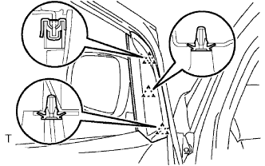
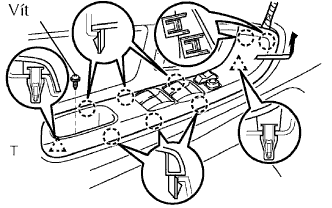
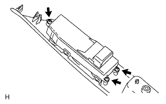
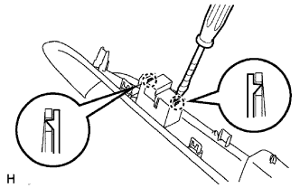
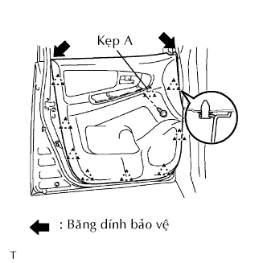
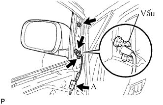
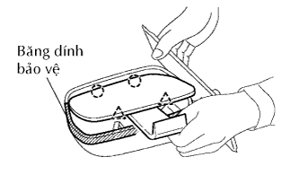
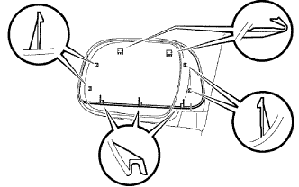

OUTER REAR VIEW MIRROR > REMOVAL |
| 1. DISCONNECT CABLE FROM NEGATIVE BATTERY TERMINAL |
| 2. REMOVE FRONT DOOR WINDOW REGULATOR HANDLE ASSEMBLY (w/o Power Window) |
 |
Hãy lồng dụng cụ tháo kẹp giữa tấm và ốp.
Giữ nguyên vị trí như trước đó và quay tay nắm cùng chiều kim đồng hồ để tháo nó.
| 3. REMOVE FRONT DOOR LOWER FRAME BRACKET GARNISH LH |
|  |
Dùng tôvít, nhả khớp 3 kẹp và tháo miếng ốp trang trí.
| 4. REMOVE FRONT ARMREST BASE PANEL UPPER LH |
|  |
Tháo vít.
Dùng một tô vít, nhả khớp 2 kẹp và 8 vấu. Tháo đế tựa tay cùng với công tắc chính nâng hạ cửa sổ theo hướng như được chỉ ra bởi mũi tên trong hình vẽ.
w/ Cửa sổ điện:
Ngắt giắc của công tắc.
|  |
w/ Cửa sổ điện (phía người lái):
Tháo 3 vít và công tắc chính nâng hạ cửa sổ ra khỏi chỗ tựa tay.
|  |
w/ Cửa sổ điện (phía hành khách trước):
Dùng tô vít, tách 2 khóa cài và ngắt rơle tích hợp ra khỏi hộp đầu nối khoang động cơ.
| 5. REMOVE FRONT DOOR TRIM BOARD SUB-ASSEMBLY LH |
|  |
Tháo vít.
Dùng tôvít, nhả khớp 9 kẹp và tháo tấm ốp.
Dùng tôvít, nhả khớp 7 vấu và tháo gioăng bên trong.
| 6. REMOVE OUTER REAR VIEW MIRROR ASSEMBLY LH |
|  |
w/ Power Mirror Control System:
Disconnect the mirror connector labeled A.
Remove the 3 nuts.
Push down the claw and remove the outer rear view mirror.
| 7. REMOVE OUTER MIRROR COVER LH (w/ Cover) |
|  |
Using a moulding remover, detach the 2 claws and 2 clips.
Remove the mirror.
|  |
Using a screwdriver, detach the 9 claws and remove the mirror cover.